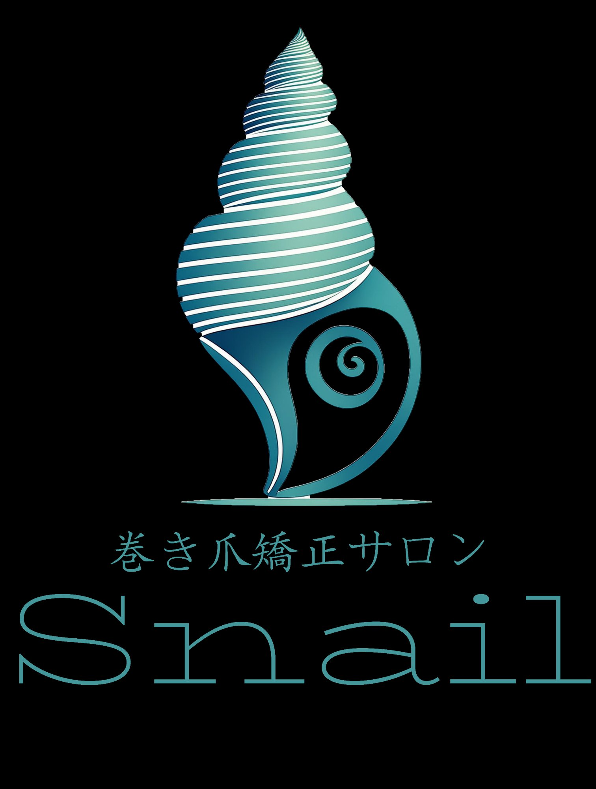

全員が、看護師です
スタッフ全員が看護師の資格を持ち、医療・介護の現場で10年以上の経験があります。持病のある方は、主治医の指示を確認してから始めます。

巻き爪矯正サロン Snail 千葉県香取市我慢を続ける前に、まず看護師にご相談ください。爪の様子をうかがって、合う方法をお伝えします。
友だち追加のあと、メッセージを送るだけです。
ご相談だけでも大丈夫です。
無理におすすめはしません。
ひとつでも当てはまれば、
一度お話を聞かせてください。
スタッフ全員が看護師の資格を持ち、医療・介護の現場で10年以上の経験があります。持病のある方は、主治医の指示を確認してから始めます。
爪の表面にうすいプレートを付けて、少しずつ形を整える「B/Sスパンゲ法」。メスや麻酔は使いません。付けたまま、お風呂もいつも通りです。
香取市川頭のお店のほか、ご自宅や介護施設へ伺うこともできます。外に出るのが大変な方も、ご家族からご相談ください。
母が「次はいつ来てくれるの？」と楽しみに
「82歳の母が両足の巻き爪で歩くのを嫌がり、家に引きこもりがちでした。Snailさんは自宅まで来てくださるので、母にも私にも負担がありません。施術中も穏やかにお話してくださって、今では庭に出て歩くようになりました。」
銚子市 40代女性（お母様の付き添い）
※ 個人の感想です。
結果を保証するものではありません。
| 受付 | 月・火・金・土 9:00〜18:00 完全予約制です。看護師が一人ずつ担当するため、1日にお受けできる人数に限りがあります。 |
|---|---|
| 場所 | 千葉県香取市川頭204-1 シェアサロン Moriyama 内 小見川駅から車で約5分 地図を見る |
| 出張 | 香取市とその周りの市や町へ伺います。 |
※ 当サロンの施術は、医療行為ではありません。回数や感じ方には個人差があります。
巻き爪矯正サロン Snail（運営：株式会社R356） ホームページを見る